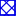

<!doctype html>
<html lang="en">
    <head>
        <meta charset="utf-8">
        <meta http-equiv="X-UA-Compatible" content="IE=edge">
        <meta name="viewport" content="initial-scale=1,user-scalable=no,maximum-scale=1,width=device-width">
        <meta name="mobile-web-app-capable" content="yes">
        <meta name="apple-mobile-web-app-capable" content="yes">
        <link rel="stylesheet" href="css/leaflet.css">
        <link rel="stylesheet" href="css/L.Control.Layers.Tree.css">
        <link rel="stylesheet" href="css/qgis2web.css">
        <link rel="stylesheet" href="css/fontawesome-all.min.css">
        <link rel="stylesheet" href="css/leaflet-control-geocoder.Geocoder.css">
        <link rel="stylesheet" href="css/leaflet-measure.css">
        <style>
        html, body, #map {
            width: 100%;
            height: 100%;
            padding: 0;
            margin: 0;
        }
        </style>
        <title></title>
    </head>
    <body>
        <div id="map">
        </div>
	<!-- Your map container -->
    	<div id="map"></div>

    	<!-- Image tag for the picture -->
    	
	<style>
		body {
        		overflow: hidden; /* Prevent overflow */
    		}
    		#map {
        		/* Your existing map styles */
    		}
    
    	#bottom-left-image {
        		position: absolute;
        		bottom: 10px ; /* Adjust this value to set the distance from the bottom */
        		left: 10px; /* Adjust this value to set the distance from the left */
        		width: 20%; /* Adjust the width of the image */
        		height: auto; /* Let the height scale according to the width */
		z-index: 9999; /* Set a high value to bring the image to the front */
    	}
	</style>

        <script src="js/qgis2web_expressions.js"></script>
        <script src="js/leaflet.js"></script>
        <script src="js/L.Control.Layers.Tree.min.js"></script>
        <script src="js/multi-style-layer.js"></script>
        <script src="js/leaflet.rotatedMarker.js"></script>
        <script src="js/leaflet.pattern.js"></script>
        <script src="js/leaflet-hash.js"></script>
        <script src="js/Autolinker.min.js"></script>
        <script src="js/rbush.min.js"></script>
        <script src="js/labelgun.min.js"></script>
        <script src="js/labels.js"></script>
        <script src="js/leaflet-control-geocoder.Geocoder.js"></script>
        <script src="js/leaflet-measure.js"></script>
        <script src="data/5kmstraal_2.js"></script>
        <script src="data/25kmstraal_3.js"></script>
        <script src="data/4kmstraal_4.js"></script>
        <script src="data/Municipalities_5.js"></script>
        <script src="data/Papierkartonbedrijf_6.js"></script>
        <script src="data/Final_solar_park_percelen_7.js"></script>
        <script>
        var map = L.map('map', {
            zoomControl:true, maxZoom:28, minZoom:1
        }).fitBounds([[50.535821530470436,1.7550843718639595],[53.97344161856426,10.281355273746328]]);
        var hash = new L.Hash(map);
        map.attributionControl.setPrefix('<a href="https://github.com/tomchadwin/qgis2web" target="_blank">qgis2web</a> &middot; <a href="https://leafletjs.com" title="A JS library for interactive maps">Leaflet</a> &middot; <a href="https://qgis.org">QGIS</a>');
        var autolinker = new Autolinker({truncate: {length: 30, location: 'smart'}});
        function removeEmptyRowsFromPopupContent(content, feature) {
         var tempDiv = document.createElement('div');
         tempDiv.innerHTML = content;
         var rows = tempDiv.querySelectorAll('tr');
         for (var i = 0; i < rows.length; i++) {
             var td = rows[i].querySelector('td.visible-with-data');
             var key = td ? td.id : '';
             if (td && td.classList.contains('visible-with-data') && feature.properties[key] == null) {
                 rows[i].parentNode.removeChild(rows[i]);
             }
         }
         return tempDiv.innerHTML;
        }
        document.querySelector(".leaflet-popup-pane").addEventListener("load", function(event) {
          var tagName = event.target.tagName,
            popup = map._popup;
          // Also check if flag is already set.
          if (tagName === "IMG" && popup && !popup._updated) {
            popup._updated = true; // Set flag to prevent looping.
            popup.update();
          }
        }, true);
        var measureControl = new L.Control.Measure({
            position: 'topleft',
            primaryLengthUnit: 'meters',
            secondaryLengthUnit: 'kilometers',
            primaryAreaUnit: 'sqmeters',
            secondaryAreaUnit: 'hectares'
        });
        measureControl.addTo(map);
        document.getElementsByClassName('leaflet-control-measure-toggle')[0]
        .innerHTML = '';
        document.getElementsByClassName('leaflet-control-measure-toggle')[0]
        .className += ' fas fa-ruler';
        var bounds_group = new L.featureGroup([]);
        function setBounds() {
            map.setMaxBounds(map.getBounds());
        }
        map.createPane('pane_KaartNederland_0');
        map.getPane('pane_KaartNederland_0').style.zIndex = 400;
        var layer_KaartNederland_0 = L.tileLayer('http://tile.openstreetmap.org/{z}/{x}/{y}.png', {
            pane: 'pane_KaartNederland_0',
            opacity: 1.0,
            attribution: '<a href="https://www.openstreetmap.org/copyright">© OpenStreetMap contributors, CC-BY-SA</a>',
            minZoom: 1,
            maxZoom: 28,
            minNativeZoom: 0,
            maxNativeZoom: 19
        });
        layer_KaartNederland_0;
        map.addLayer(layer_KaartNederland_0);
        map.createPane('pane_SatellietkaartNederland_1');
        map.getPane('pane_SatellietkaartNederland_1').style.zIndex = 401;
        var layer_SatellietkaartNederland_1 = L.tileLayer('https://mt1.google.com/vt/lyrs=s&x={x}&y={y}&z={z}', {
            pane: 'pane_SatellietkaartNederland_1',
            opacity: 1.0,
            attribution: '',
            minZoom: 1,
            maxZoom: 28,
            minNativeZoom: 0,
            maxNativeZoom: 20
        });
        layer_SatellietkaartNederland_1;
        map.addLayer(layer_SatellietkaartNederland_1);
        function pop_5kmstraal_2(feature, layer) {
            var popupContent = '<table>\
                </table>';
            layer.bindPopup(popupContent, {maxHeight: 400});
            var popup = layer.getPopup();
            var content = popup.getContent();
            var updatedContent = removeEmptyRowsFromPopupContent(content, feature);
            popup.setContent(updatedContent);
        }

        function style_5kmstraal_2_0() {
            return {
                pane: 'pane_5kmstraal_2',
                opacity: 1,
                color: 'rgba(228,26,28,1.0)',
                dashArray: '',
                lineCap: 'square',
                lineJoin: 'bevel',
                weight: 4.0,
                fillOpacity: 0,
                interactive: true,
            }
        }
        map.createPane('pane_5kmstraal_2');
        map.getPane('pane_5kmstraal_2').style.zIndex = 402;
        map.getPane('pane_5kmstraal_2').style['mix-blend-mode'] = 'normal';
        var layer_5kmstraal_2 = new L.geoJson(json_5kmstraal_2, {
            attribution: '',
            interactive: true,
            dataVar: 'json_5kmstraal_2',
            layerName: 'layer_5kmstraal_2',
            pane: 'pane_5kmstraal_2',
            onEachFeature: pop_5kmstraal_2,
            style: style_5kmstraal_2_0,
        });
        bounds_group.addLayer(layer_5kmstraal_2);
        map.addLayer(layer_5kmstraal_2);
        function pop_25kmstraal_3(feature, layer) {
            var popupContent = '<table>\
                    <tr>\
                        <td colspan="2">' + (feature.properties['id'] !== null ? autolinker.link(feature.properties['id'].toLocaleString()) : '') + '</td>\
                    </tr>\
                    <tr>\
                        <td colspan="2">' + (feature.properties['fid'] !== null ? autolinker.link(feature.properties['fid'].toLocaleString()) : '') + '</td>\
                    </tr>\
                    <tr>\
                        <td colspan="2">' + (feature.properties['nea_id'] !== null ? autolinker.link(feature.properties['nea_id'].toLocaleString()) : '') + '</td>\
                    </tr>\
                    <tr>\
                        <td colspan="2">' + (feature.properties['plant_name'] !== null ? autolinker.link(feature.properties['plant_name'].toLocaleString()) : '') + '</td>\
                    </tr>\
                    <tr>\
                        <td colspan="2">' + (feature.properties['nea_name'] !== null ? autolinker.link(feature.properties['nea_name'].toLocaleString()) : '') + '</td>\
                    </tr>\
                    <tr>\
                        <td colspan="2">' + (feature.properties['2020_nea_e'] !== null ? autolinker.link(feature.properties['2020_nea_e'].toLocaleString()) : '') + '</td>\
                    </tr>\
                    <tr>\
                        <td colspan="2">' + (feature.properties['year_plant'] !== null ? autolinker.link(feature.properties['year_plant'].toLocaleString()) : '') + '</td>\
                    </tr>\
                    <tr>\
                        <td colspan="2">' + (feature.properties['sbi_name'] !== null ? autolinker.link(feature.properties['sbi_name'].toLocaleString()) : '') + '</td>\
                    </tr>\
                    <tr>\
                        <td colspan="2">' + (feature.properties['latitude'] !== null ? autolinker.link(feature.properties['latitude'].toLocaleString()) : '') + '</td>\
                    </tr>\
                    <tr>\
                        <td colspan="2">' + (feature.properties['longitude'] !== null ? autolinker.link(feature.properties['longitude'].toLocaleString()) : '') + '</td>\
                    </tr>\
                </table>';
            layer.bindPopup(popupContent, {maxHeight: 400});
            var popup = layer.getPopup();
            var content = popup.getContent();
            var updatedContent = removeEmptyRowsFromPopupContent(content, feature);
            popup.setContent(updatedContent);
        }

        function style_25kmstraal_3_0() {
            return {
                pane: 'pane_25kmstraal_3',
                opacity: 1,
                color: 'rgba(53,121,177,1.0)',
                dashArray: '',
                lineCap: 'square',
                lineJoin: 'bevel',
                weight: 4.0,
                fillOpacity: 0,
                interactive: true,
            }
        }
        map.createPane('pane_25kmstraal_3');
        map.getPane('pane_25kmstraal_3').style.zIndex = 403;
        map.getPane('pane_25kmstraal_3').style['mix-blend-mode'] = 'normal';
        var layer_25kmstraal_3 = new L.geoJson(json_25kmstraal_3, {
            attribution: '',
            interactive: true,
            dataVar: 'json_25kmstraal_3',
            layerName: 'layer_25kmstraal_3',
            pane: 'pane_25kmstraal_3',
            onEachFeature: pop_25kmstraal_3,
            style: style_25kmstraal_3_0,
        });
        bounds_group.addLayer(layer_25kmstraal_3);
        function pop_4kmstraal_4(feature, layer) {
            var popupContent = '<table>\
                    <tr>\
                        <td colspan="2">' + (feature.properties['id'] !== null ? autolinker.link(feature.properties['id'].toLocaleString()) : '') + '</td>\
                    </tr>\
                    <tr>\
                        <td colspan="2">' + (feature.properties['fid'] !== null ? autolinker.link(feature.properties['fid'].toLocaleString()) : '') + '</td>\
                    </tr>\
                    <tr>\
                        <td colspan="2">' + (feature.properties['nea_id'] !== null ? autolinker.link(feature.properties['nea_id'].toLocaleString()) : '') + '</td>\
                    </tr>\
                    <tr>\
                        <td colspan="2">' + (feature.properties['plant_name'] !== null ? autolinker.link(feature.properties['plant_name'].toLocaleString()) : '') + '</td>\
                    </tr>\
                    <tr>\
                        <td colspan="2">' + (feature.properties['nea_name'] !== null ? autolinker.link(feature.properties['nea_name'].toLocaleString()) : '') + '</td>\
                    </tr>\
                    <tr>\
                        <td colspan="2">' + (feature.properties['2020_nea_e'] !== null ? autolinker.link(feature.properties['2020_nea_e'].toLocaleString()) : '') + '</td>\
                    </tr>\
                    <tr>\
                        <td colspan="2">' + (feature.properties['year_plant'] !== null ? autolinker.link(feature.properties['year_plant'].toLocaleString()) : '') + '</td>\
                    </tr>\
                    <tr>\
                        <td colspan="2">' + (feature.properties['sbi_name'] !== null ? autolinker.link(feature.properties['sbi_name'].toLocaleString()) : '') + '</td>\
                    </tr>\
                    <tr>\
                        <td colspan="2">' + (feature.properties['latitude'] !== null ? autolinker.link(feature.properties['latitude'].toLocaleString()) : '') + '</td>\
                    </tr>\
                    <tr>\
                        <td colspan="2">' + (feature.properties['longitude'] !== null ? autolinker.link(feature.properties['longitude'].toLocaleString()) : '') + '</td>\
                    </tr>\
                </table>';
            layer.bindPopup(popupContent, {maxHeight: 400});
            var popup = layer.getPopup();
            var content = popup.getContent();
            var updatedContent = removeEmptyRowsFromPopupContent(content, feature);
            popup.setContent(updatedContent);
        }

        function style_4kmstraal_4_0() {
            return {
                pane: 'pane_4kmstraal_4',
                opacity: 1,
                color: 'rgba(77,175,74,1.0)',
                dashArray: '',
                lineCap: 'square',
                lineJoin: 'bevel',
                weight: 4.0,
                fillOpacity: 0,
                interactive: true,
            }
        }
        map.createPane('pane_4kmstraal_4');
        map.getPane('pane_4kmstraal_4').style.zIndex = 404;
        map.getPane('pane_4kmstraal_4').style['mix-blend-mode'] = 'normal';
        var layer_4kmstraal_4 = new L.geoJson(json_4kmstraal_4, {
            attribution: '',
            interactive: true,
            dataVar: 'json_4kmstraal_4',
            layerName: 'layer_4kmstraal_4',
            pane: 'pane_4kmstraal_4',
            onEachFeature: pop_4kmstraal_4,
            style: style_4kmstraal_4_0,
        });
        bounds_group.addLayer(layer_4kmstraal_4);
        function pop_Municipalities_5(feature, layer) {
            var popupContent = '<table>\
                    <tr>\
                        <th scope="row">gemeentenaam</th>\
                        <td>' + (feature.properties['gemeentenaam'] !== null ? autolinker.link(feature.properties['gemeentenaam'].toLocaleString()) : '') + '</td>\
                    </tr>\
                </table>';
            layer.bindPopup(popupContent, {maxHeight: 400});
            var popup = layer.getPopup();
            var content = popup.getContent();
            var updatedContent = removeEmptyRowsFromPopupContent(content, feature);
            popup.setContent(updatedContent);
        }

        function style_Municipalities_5_0() {
            return {
                pane: 'pane_Municipalities_5',
                opacity: 1,
                color: 'rgba(171,175,167,1.0)',
                dashArray: '',
                lineCap: 'square',
                lineJoin: 'bevel',
                weight: 4.0,
                fillOpacity: 0,
                interactive: true,
            }
        }
        map.createPane('pane_Municipalities_5');
        map.getPane('pane_Municipalities_5').style.zIndex = 405;
        map.getPane('pane_Municipalities_5').style['mix-blend-mode'] = 'normal';
        var layer_Municipalities_5 = new L.geoJson(json_Municipalities_5, {
            attribution: '',
            interactive: true,
            dataVar: 'json_Municipalities_5',
            layerName: 'layer_Municipalities_5',
            pane: 'pane_Municipalities_5',
            onEachFeature: pop_Municipalities_5,
            style: style_Municipalities_5_0,
        });
        bounds_group.addLayer(layer_Municipalities_5);
        map.addLayer(layer_Municipalities_5);
        function pop_Papierkartonbedrijf_6(feature, layer) {
            var popupContent = '<table>\
                    <tr>\
                        <th scope="row">plant_name</th>\
                        <td>' + (feature.properties['plant_name'] !== null ? autolinker.link(feature.properties['plant_name'].toLocaleString()) : '') + '</td>\
                    </tr>\
                    <tr>\
                        <td colspan="2"><strong>nea_name</strong><br />' + (feature.properties['nea_name'] !== null ? autolinker.link(feature.properties['nea_name'].toLocaleString()) : '') + '</td>\
                    </tr>\
                </table>';
            layer.bindPopup(popupContent, {maxHeight: 400});
            var popup = layer.getPopup();
            var content = popup.getContent();
            var updatedContent = removeEmptyRowsFromPopupContent(content, feature);
            popup.setContent(updatedContent);
        }

        function style_Papierkartonbedrijf_6_0() {
            return {
                pane: 'pane_Papierkartonbedrijf_6',
                radius: 4.0,
                opacity: 1,
                color: 'rgba(35,35,35,1.0)',
                dashArray: '',
                lineCap: 'butt',
                lineJoin: 'miter',
                weight: 1,
                fill: true,
                fillOpacity: 1,
                fillColor: 'rgba(243,166,178,1.0)',
                interactive: true,
            }
        }
        map.createPane('pane_Papierkartonbedrijf_6');
        map.getPane('pane_Papierkartonbedrijf_6').style.zIndex = 406;
        map.getPane('pane_Papierkartonbedrijf_6').style['mix-blend-mode'] = 'normal';
        var layer_Papierkartonbedrijf_6 = new L.geoJson(json_Papierkartonbedrijf_6, {
            attribution: '',
            interactive: true,
            dataVar: 'json_Papierkartonbedrijf_6',
            layerName: 'layer_Papierkartonbedrijf_6',
            pane: 'pane_Papierkartonbedrijf_6',
            onEachFeature: pop_Papierkartonbedrijf_6,
            pointToLayer: function (feature, latlng) {
                var context = {
                    feature: feature,
                    variables: {}
                };
                return L.circleMarker(latlng, style_Papierkartonbedrijf_6_0(feature));
            },
        });
        bounds_group.addLayer(layer_Papierkartonbedrijf_6);
        map.addLayer(layer_Papierkartonbedrijf_6);
        function pop_Final_solar_park_percelen_7(feature, layer) {
            var popupContent = '<table>\
                    <tr>\
                        <th scope="row">kadastraleAanduiding</th>\
                        <td>' + (feature.properties['kadastraleAanduiding'] !== null ? autolinker.link(feature.properties['kadastraleAanduiding'].toLocaleString()) : '') + '</td>\
                    </tr>\
                    <tr>\
                        <th scope="row">sectie</th>\
                        <td>' + (feature.properties['sectie'] !== null ? autolinker.link(feature.properties['sectie'].toLocaleString()) : '') + '</td>\
                    </tr>\
                    <tr>\
                        <th scope="row">perceelnummer</th>\
                        <td>' + (feature.properties['perceelnummer'] !== null ? autolinker.link(feature.properties['perceelnummer'].toLocaleString()) : '') + '</td>\
                    </tr>\
                    <tr>\
                        <th scope="row">Percelen area ha</th>\
                        <td>' + (feature.properties['Percelen area ha'] !== null ? autolinker.link(feature.properties['Percelen area ha'].toLocaleString()) : '') + '</td>\
                    </tr>\
                    <tr>\
                        <th scope="row">Good grounduse percelen area ha</th>\
                        <td>' + (feature.properties['Good grounduse percelen area ha'] !== null ? autolinker.link(feature.properties['Good grounduse percelen area ha'].toLocaleString()) : '') + '</td>\
                    </tr>\
                </table>';
            layer.bindPopup(popupContent, {maxHeight: 400});
            var popup = layer.getPopup();
            var content = popup.getContent();
            var updatedContent = removeEmptyRowsFromPopupContent(content, feature);
            popup.setContent(updatedContent);
        }

        var pattern_Final_solar_park_percelen_7_0 = new L.StripePattern({
            weight: 0.3,
            spaceWeight: 2.0,
            color: '#0000e4',
            opacity: 1.0,
            spaceOpacity: 0,
            angle: 315
        });
        pattern_Final_solar_park_percelen_7_0.addTo(map);
        function style_Final_solar_park_percelen_7_0() {
            return {
                pane: 'pane_Final_solar_park_percelen_7',
                stroke: false,
                fillOpacity: 1,
                fillPattern: pattern_Final_solar_park_percelen_7_0,
                interactive: true,
            }
        }
        var pattern_Final_solar_park_percelen_7_1 = new L.StripePattern({
            weight: 0.3,
            spaceWeight: 2.0,
            color: '#0000e4',
            opacity: 1.0,
            spaceOpacity: 0,
            angle: 225
        });
        pattern_Final_solar_park_percelen_7_1.addTo(map);
        function style_Final_solar_park_percelen_7_1() {
            return {
                pane: 'pane_Final_solar_park_percelen_7',
                stroke: false,
                fillOpacity: 1,
                fillPattern: pattern_Final_solar_park_percelen_7_1,
                interactive: true,
            }
        }
        function style_Final_solar_park_percelen_7_2() {
            return {
                pane: 'pane_Final_solar_park_percelen_7',
                opacity: 1,
                color: 'rgba(0,0,228,1.0)',
                dashArray: '',
                lineCap: 'square',
                lineJoin: 'bevel',
                weight: 2.0,
                fillOpacity: 0,
                interactive: true,
            }
        }
        map.createPane('pane_Final_solar_park_percelen_7');
        map.getPane('pane_Final_solar_park_percelen_7').style.zIndex = 407;
        map.getPane('pane_Final_solar_park_percelen_7').style['mix-blend-mode'] = 'normal';
        var layer_Final_solar_park_percelen_7 = new L.geoJson.multiStyle(json_Final_solar_park_percelen_7, {
            attribution: '',
            interactive: true,
            dataVar: 'json_Final_solar_park_percelen_7',
            layerName: 'layer_Final_solar_park_percelen_7',
            pane: 'pane_Final_solar_park_percelen_7',
            onEachFeature: pop_Final_solar_park_percelen_7,
            styles: [style_Final_solar_park_percelen_7_0,style_Final_solar_park_percelen_7_1,style_Final_solar_park_percelen_7_2,]
        });
        bounds_group.addLayer(layer_Final_solar_park_percelen_7);
        map.addLayer(layer_Final_solar_park_percelen_7);
        var osmGeocoder = new L.Control.Geocoder({
            collapsed: true,
            position: 'topleft',
            text: 'Search',
            title: 'Testing'
        }).addTo(map);
        document.getElementsByClassName('leaflet-control-geocoder-icon')[0]
        .className += ' fa fa-search';
        document.getElementsByClassName('leaflet-control-geocoder-icon')[0]
        .title += 'Search for a place';
        var baseMaps = {};
        var overlaysTree = [
            {label: ' Potentiele locaties zonnepark', layer: layer_Final_solar_park_percelen_7},
            {label: ' Papier/karton bedrijf', layer: layer_Papierkartonbedrijf_6},
            {label: ' Gemeentegrenzen', layer: layer_Municipalities_5},
        {label: '<b>assisting layers</b>', selectAllCheckbox: true, children: [
            {label: ' 4 km straal', layer: layer_4kmstraal_4},
            {label: ' 2,5 km straal', layer: layer_25kmstraal_3},
            {label: ' 5 km straal', layer: layer_5kmstraal_2},]},
            {label: "Satelliet kaart Nederland", layer: layer_SatellietkaartNederland_1},
            {label: "Kaart Nederland", layer: layer_KaartNederland_0},]
        var lay = L.control.layers.tree(null, overlaysTree,{
            //namedToggle: true,
            //selectorBack: false,
            //closedSymbol: '&#8862; &#x1f5c0;',
            //openedSymbol: '&#8863; &#x1f5c1;',
            //collapseAll: 'Collapse all',
            //expandAll: 'Expand all',
            collapsed: false, 
        });
        lay.addTo(map);
        setBounds();
        var i = 0;
        layer_Papierkartonbedrijf_6.eachLayer(function(layer) {
            var context = {
                feature: layer.feature,
                variables: {}
            };
            layer.bindTooltip((layer.feature.properties['plant_name'] !== null?String('<div style="color: #ffffff; font-size: 17pt; font-family: \'Open Sans\', sans-serif; font-weight: bold; text-align: center; padding: 3px; -webkit-text-stroke: 1.5px black;">' + layer.feature.properties['plant_name']) + '</div>':''), {permanent: true, offset: [-0, -16], className: 'css_Papierkartonbedrijf_6'});
            labels.push(layer);
            totalMarkers += 1;
              layer.added = true;
              addLabel(layer, i);
              i++;
        });
        resetLabels([layer_Municipalities_5,layer_Papierkartonbedrijf_6,layer_Final_solar_park_percelen_7]);
        map.on("zoomend", function(){
            resetLabels([layer_Municipalities_5,layer_Papierkartonbedrijf_6,layer_Final_solar_park_percelen_7]);
        });
        map.on("layeradd", function(){
            resetLabels([layer_Municipalities_5,layer_Papierkartonbedrijf_6,layer_Final_solar_park_percelen_7]);
        });
        map.on("layerremove", function(){
            resetLabels([layer_Municipalities_5,layer_Papierkartonbedrijf_6,layer_Final_solar_park_percelen_7]);
        });
        </script>
    </body>
</html>
